Gestione Tenant
La SCMP è stata sviluppata come soluzione Multi-Tenant, ciò offre maggiore sicurezza, personalizzazione, flessibilità e scalabilità, con un'amministrazione più efficiente e costi ridotti.
Per permettere all’utente di gestire i tenant presenti nell’ infrastruttura è stata resa disponibile la funzionalità “Tenant” disponibile solo per gli utenti abilitati alla Gestione del servizio (5.4.4.3).
Per accedere alla funzionalità, in alto a sinistra cliccare sul pulsante bento. Dopodiché, cliccare su “Tenant” (Figura 30).
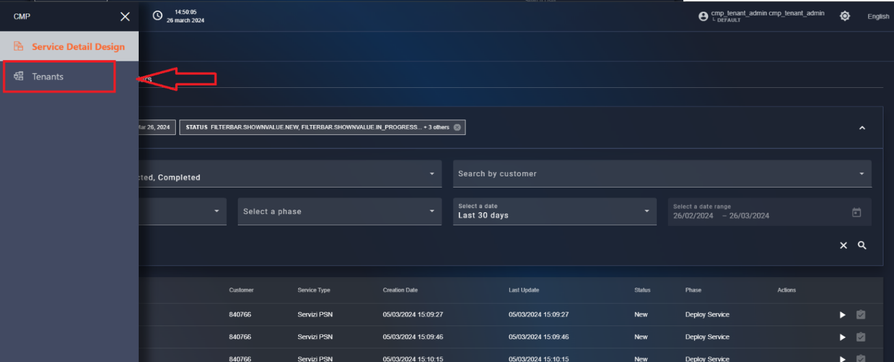
Figura - Accesso alla gestione Tenant
Creazione di un nuovo tenant
A questo punto, l’utente si ritrova all’interno della pagina del tab “Tenant” che contiene la lista dei tenant configurati sul sistema, per aggiungere un nuovo tenant cliccare il “menu” disponibile in alto a destra e selezionare la voce “+ Add”, (Figura 31).
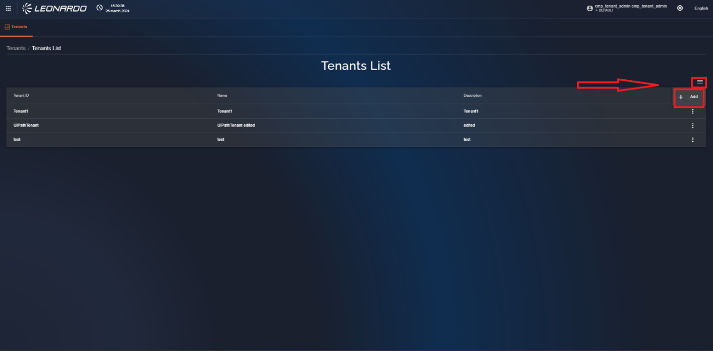
Figura - Aggiungi nuovo tenant
Una volta premuto viene visualizzata la pagina di configurazione nuovo tenant (Figura 32) divisa in tre sezioni:
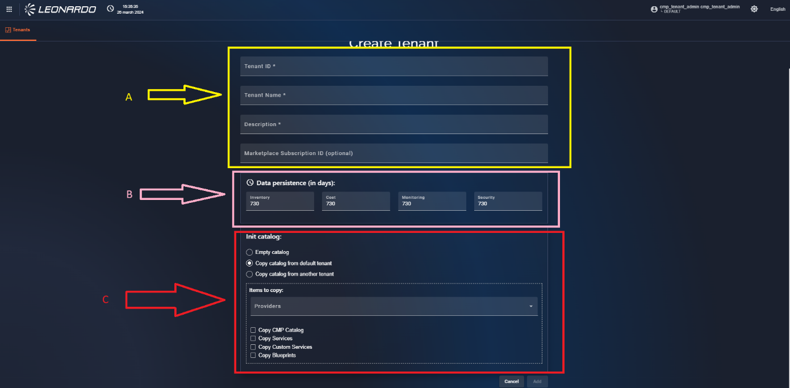
Figura – Form di creazione nuovo tenant
- Parametri generali:
| Nome | Descrizione | Obbligatorio |
|---|---|---|
| Tenant ID | ID univoco del nuovo tenant | x |
| Tenant Name | Nome del tenant che verrà visualizzato all’ utente | x |
| Description | Una descrizione del tenant | x |
| MarketPlace Subscription ID | l’id ricevuto dal marketplace Azure alla sottoscrizione del servizio |
Tabella 7 – parametri generali tenant
- Data persistance:
| Nome | Descrizione | Obbligatorio |
|---|---|---|
| Inventory | Indica il numero di giorni per cui i dati relativi all ‘inventario saranno conservati nelle collections presenti su DB | x |
| Cost | Indica il numero di giorni per cui i dati relativi ai costi saranno conservati nelle collections presenti su DB | x |
| Monitoring | Indica il numero di giorni per cui i dati relativi al monitraggio saranno conservati nelle collections presenti su DB | x |
| Security | Indica il numero di giorni per cui i dati relativi allla security saranno conservati nelle collections presenti su DB | x |
Tabella 8 – Parametri di data persistance
- Init Catalog
In questa sezione è possibile selezionare gli elementi di catalogo che verranno copiati automaticamente sul nuovo tenant.
La sezione iniziale (1) permette di scegliere una sola opzione tra:
-
Empty Catalog : lasciare il catalogo vuoto senza eseguire nessuna copia di informazioni
-
Copy Catalog from Default Tenant : Indica che il tenant dal quale recuperare le informazioni da copiare sia il tenant di Default.
-
Copy Catalog from other Tenant: se viene selezionato nella sezione in basso verrà visualizzato un nuovo campo contenente la lista dei tenant disponibili così da permette la selezione del tenant dal quale recuperare le informazioni da copiare.
Successivamente è possibile compilare la sezione successiva (2) inserendo i campi non obbligatori:
-
Providers: lista dei provider configurati nel tenant di partenza, selezionando uno o più provider ne verranno copiati gli elementi di catalogo nel nuovo tenant.
-
Copy SCMP Catalog: Se attivato tutti gli elementi presenti nel catalogo SCMP verranno aggiunti al nuovo tenant.
-
Copy Services: se attivato tutti gli elementi presenti nel catalogo SCMP verranno aggiunti al nuovo tenant.
-
Copy Custom Services: se attivato i servizi custom disponibili sul tenant verranno aggiunti al nuovo tenant.
-
Copy Blueprints: se attivato tutte le Blueprint disponibili verranno aggiunte al nuovo tenant.
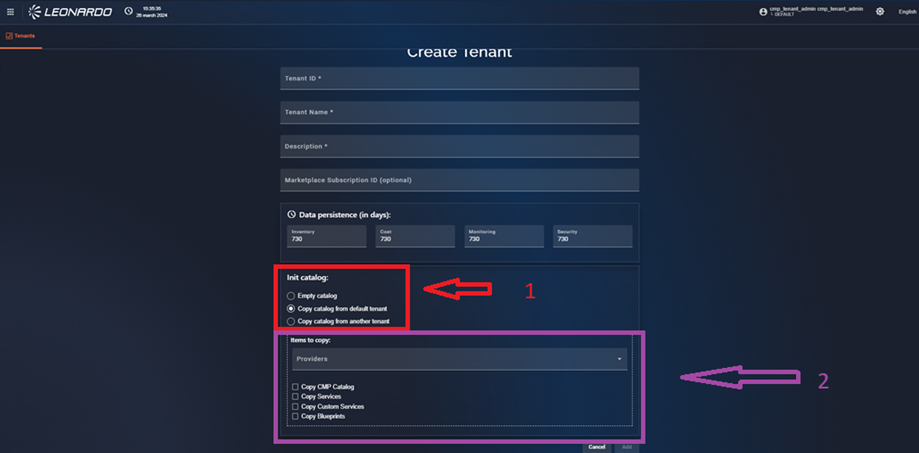
Figura – Sezione di inizializzazione catalogo
Per confermare l’inserimento del nuovo tenant cliccare il pulsante “Save” presente in basso a destra, dopo aver aspettato il caricamento verrà visualizzato un messaggio di conferma creazione e l’utente viene riportato nella lista dei tenant dove sarà presente il nuovo tenant appena creato
Visualizzazione , Modifica ed Eliminazione di un tenant
Nella lista dei tenant, in corrispondenza di ogni risultato è presente un “menù” con tre pulsanti (Figura 33):
-
“Show”: permette la visualizzazione delle info sul tenant(indicato con una freccia rossa nell’ immagine).
-
“Edit”: permette la modifica delle informazioni base del tenant (indicato con una freccia gialla nell’ immagine).
-
“Delete”: permette l’eliminazione dell’ utente dopo aver cliccato “conferma” nella modale visualizzata (indicato con una freccia viola nell’ immagine).
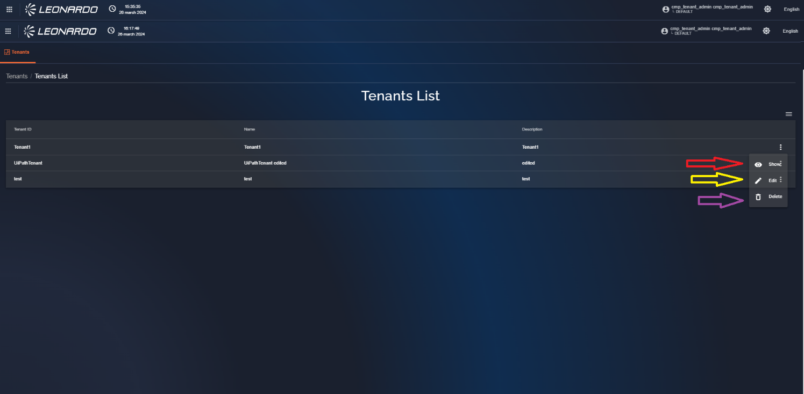
Figura - Pulsanti di controllo
Sincronizzazione dei cataloghi tra tenant differenti
Viene implementata, all’ interno della SCMP una funzionalità che permette all’ utente di copiare un listino caricato precedentemente utilizzando un file XML nella funzionalità di catalogo, per farlo è necessario cliccare in corrispondenza del tenant di destinzione e cliccare la voce “Associate tenant” (Figura 35)
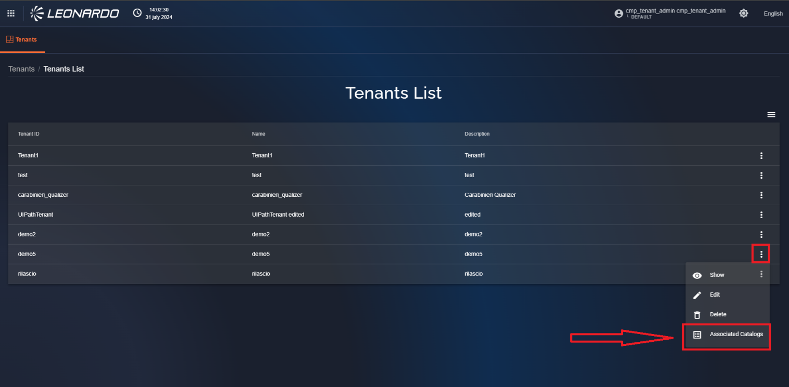
Figura - Funzionalità di associazione cataloghi
Verrà visualizzata una finestra che mostra la lista dei listini precedentemente associati, in basso, cliccando sul pulsante “Associate Catalog” inizieremo la procedura di associazione (Figura 36)
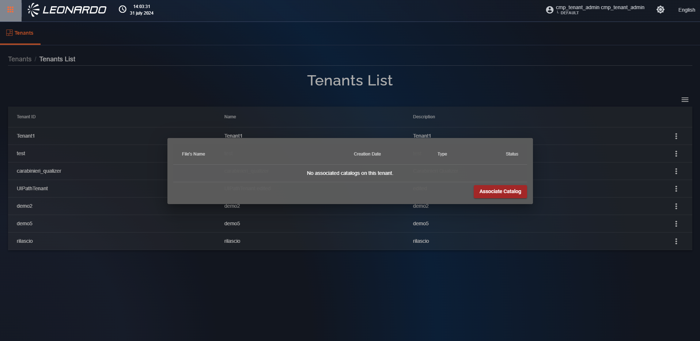
Figura -Avvio del processo di Associazione
Il primo step necessario per l’associazione dei listini è la selezione della fonte, in questo caso del tenant che contiene il listino da associare (Figura 37)
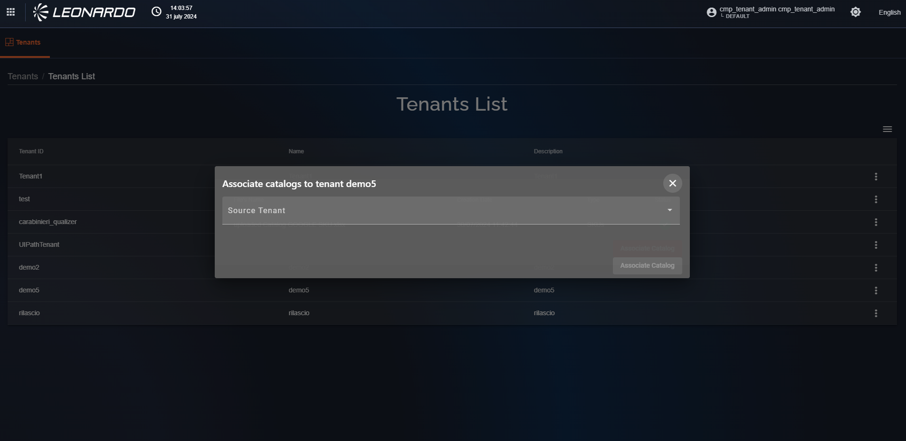
Figura - Scelta del tenant "Fonte"
Selezionando il tenant “Fonte” verrà visualizzata a schermo la lista dei listini presenti all’ interno del tenant, è possibile selezionare uno o più elementi della lista che verranno importati ed associati automaticamente cliccando il pulsante “Associate catalog”.(Figura 38)
Verrà visualizzata una modale di conferma che ci informa di attendere qualche minuto per permettere al sistema di completare le operazioni e verremo riportati alla pagina “tenant”. (Figura 39)
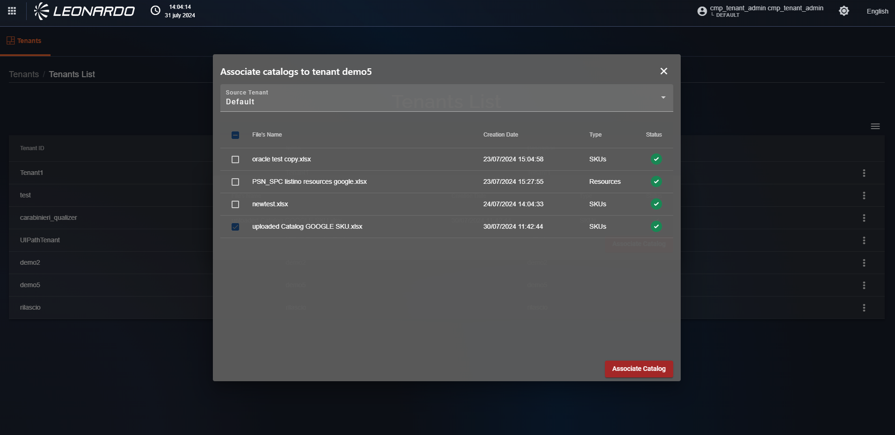
Figura - Selezione del listino
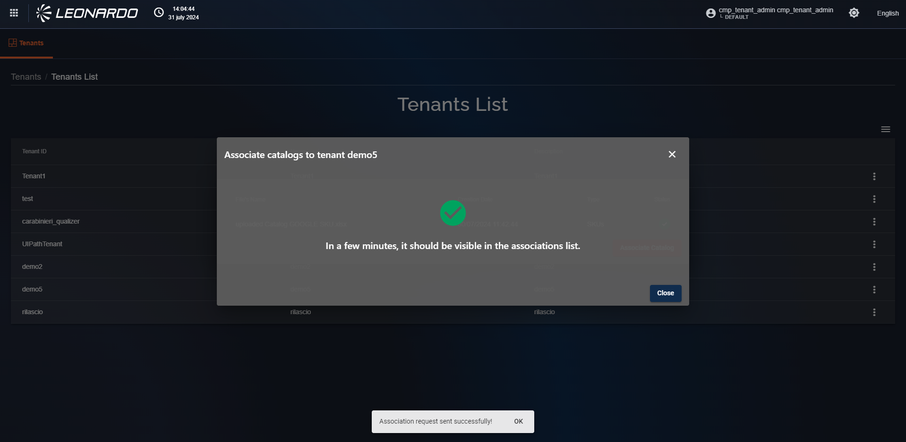
Figura - Confema di avvio del processo di importazione
Nella lista dei tenant è possibile cliccare sulla riga corrispondente per visualizzare , oltre ai dettagli del tenant, anche la lista con all’ interno il nuovo listino che abbiamo importato (Figura 40) , sempre in questa pagina è possibile cliccare il tasto “Associate catalog” per ripetere le operazioni appena descritte.
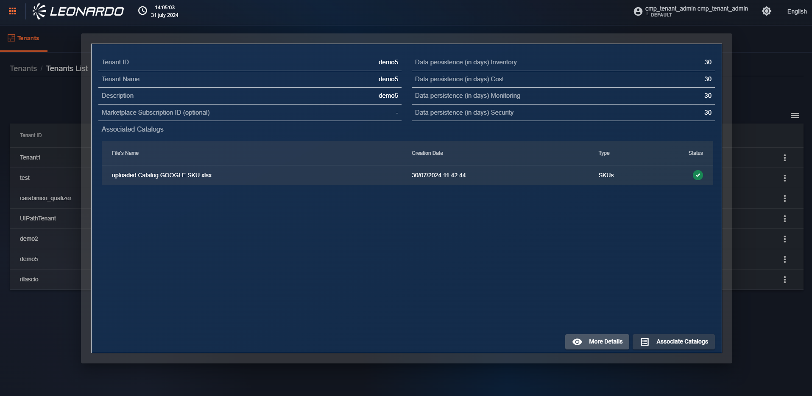
Figura - Listino importato correttamente